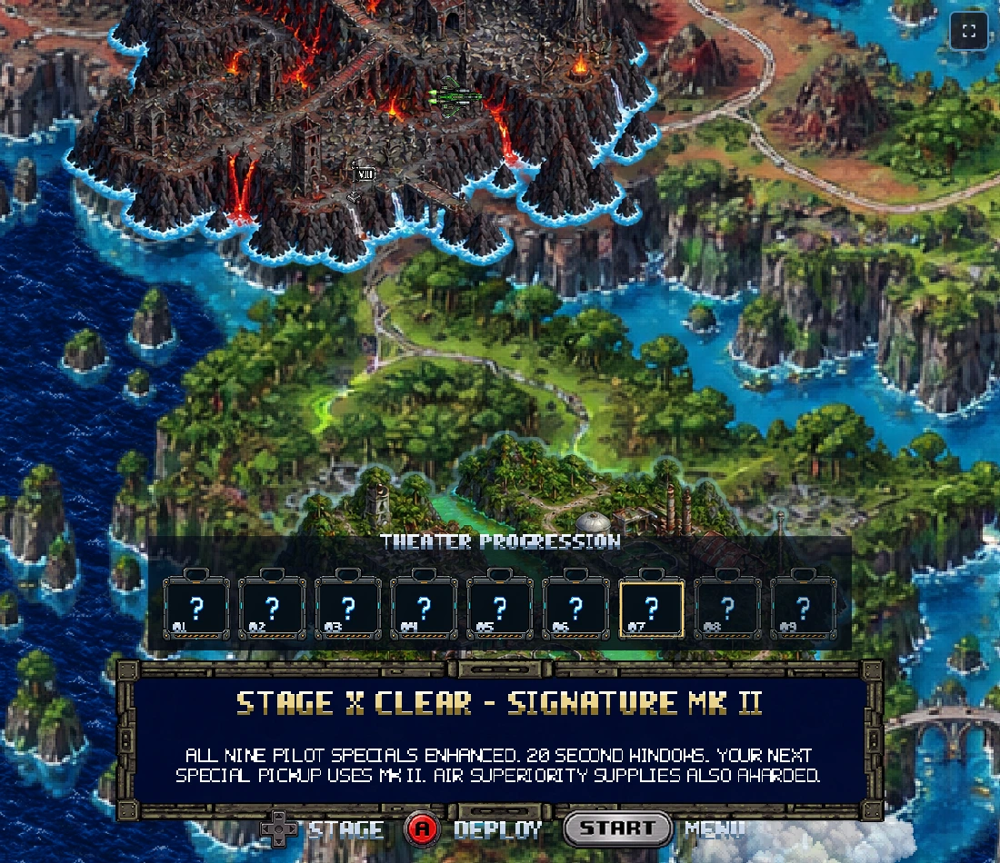
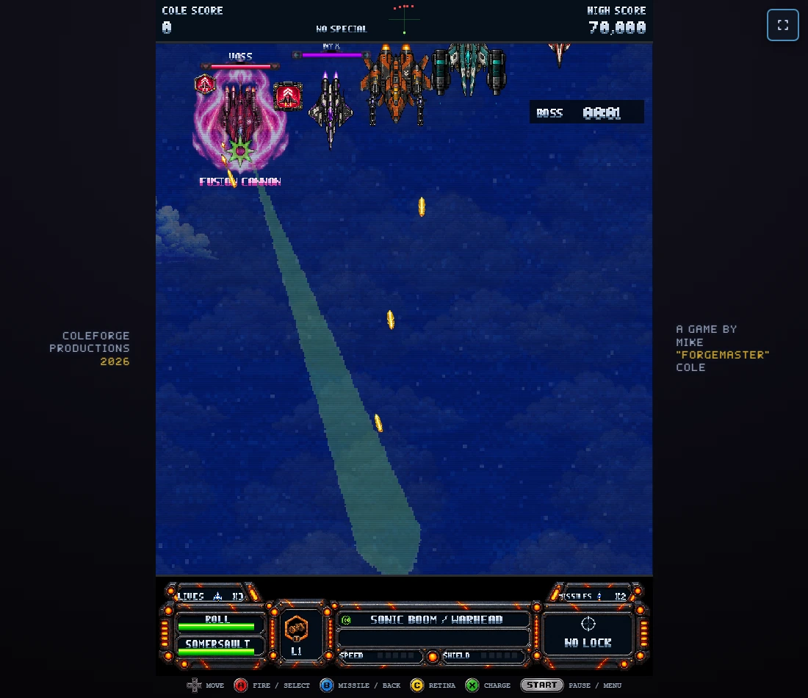
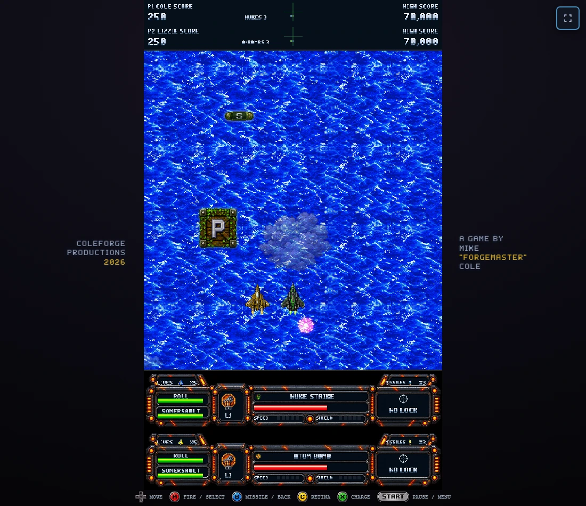
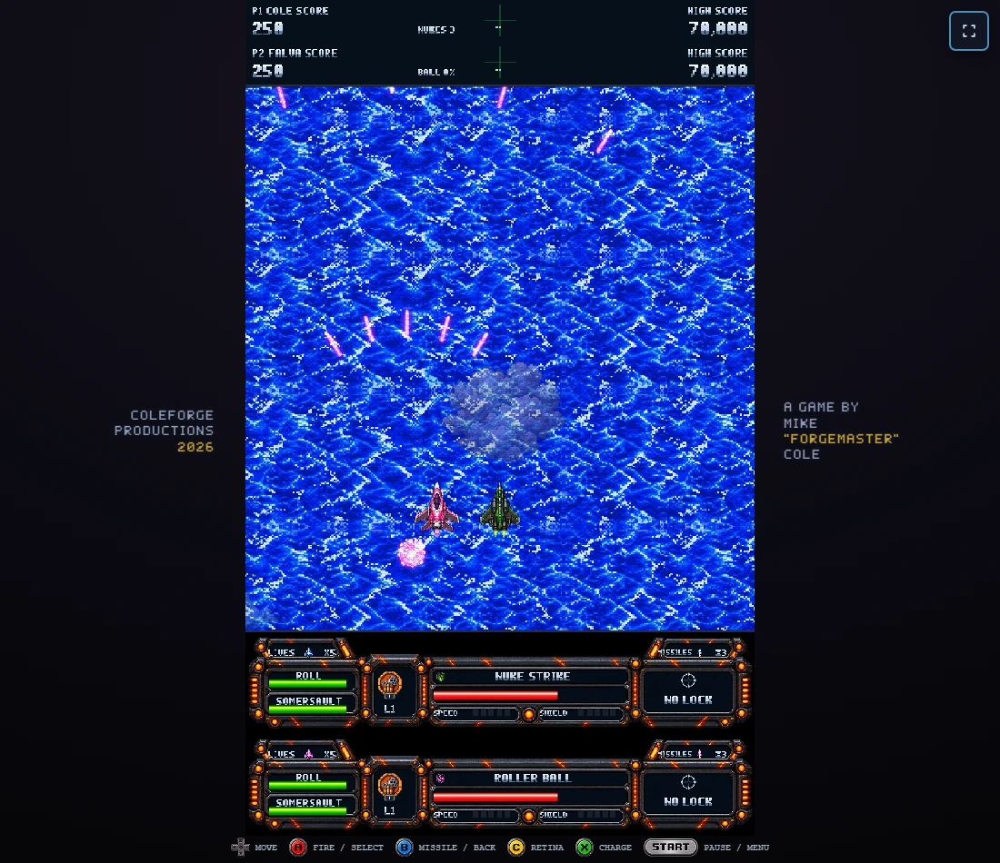

Special supply · Signature Mk II
The first supply box flies toward your pilot. Shoot it or meet it, then collect the released special. Beat either Stage X boss to permanently enhance all nine pilot specials. The Rebel fighters lead with their own signature attacks.
Play the updated game · Implementation and checks
Each pilot's opening pickup

Stage X reward
Both routes earn the same permanent upgrade: Harrier Pursuit or Rebel Fury. Existing missile, life and Forge supplies are also awarded. Later special pickups use Mk II, including your next opening supply.

The reward after an accelerated clear through the real Rebel damage and physical death controllers.
Enemy Rebel signatures

Their real AI collected personal supplies, charged, warned and released each special. Existing secondary attacks, shootable counters and difficulty limits remain in the encounter.
Voss's secondary Fusion Cannon

The final focused render check verifies the secondary attack name.All nine Stage X upgrades
Every Mk II special has a 20 second window, plus the improvement below. Axel's five-hit shield pool stays intact; Stage 6 keeps full flight speed.
| Pilot | Signature Mk II | Improvement |
|---|
Two players

Cole and Lizzie each keep their own pickup, ability and timer.
The second player's attached special effects also render around their own ship.